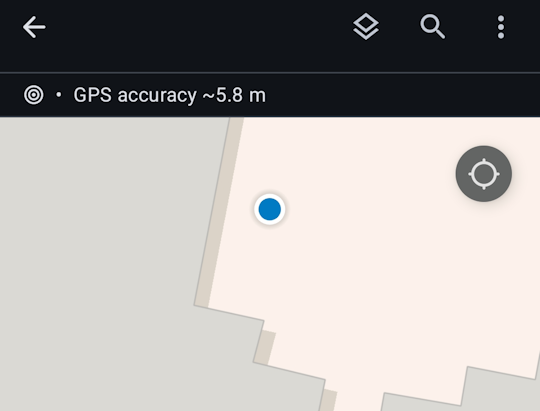

Mobile GIS
Table of Contents
- Introduction
- What is mobile GIS?
- Location awareness
- Geolocation API
- Accuracy and uncertainty
- Location-based services
- Geofencing
- Privacy
- Mobile GIS in the field
- Mobile GIS architecture
- Volunteered Geographic Information
- Summary
Introduction
A map that knows where it is. This sounds like something from the realm of fantasy—enter the magic passcode to unlock the map, and it will reveal to whomever holds it their current location on the very map they are holding! This is the reality that has been made possible by portable, location-aware electronics.
The popularity of phones has implications for how web maps look and work. Compared to desktop and laptop computers, phones and tablets have certain constraints, but they also allow people to become part of the map, opening up new possibilities for Web GIS. From Uber to Pokemon Go to Tinder, Web GIS is a common feature in mobile applications.
What is mobile GIS?
Compare mobile GIS with desktop GIS. The latter is usually associated with larger screens, more computing power, and work performed in a relatively fixed environment, while the former assumes that the device, the user, and often the data collection activity itself are moving. The mobility of the device changes not only the interface, fit to a smaller screen, but the purpose of the system, which can now revolve around the location of the user.
This commonly takes shape as location-based service apps that use a device’s location to provide a function or information, such as routing, finding nearby stores, or triggering an alert.
Mobile GIS also includes apps that make mobile devices part of a GIS workflow, such as field data collection, navigation, or editing shared layers.
Location awareness
As their name implies, mobile devices move. Moreover, phones can know where they are, if they are moving and at what speed, which direction they are facing, and other spatial metrics. This ability to determine location is called location awareness. A device can be aware of its position on Earth using GPS satellites, cell tower triangulation, proximity to known Wi-Fi networks, or a combination of these and other methods.
GPS chips in phones allow the device to calculate its location within several meters without the need for cellular service or the Internet. Disable your Wi-Fi and cell service (airplane mode) and your phone might still give you a reasonably accurate latitude and longitude, because the GPS receiver is still receiving signals from GPS satellites and calculating the location based on those signals, although it will not be as accurate as when your device can use the Internet to communicate with a geolocation API.
This is an important point conceptually: a phone’s location is not a magical fact that the device simply “knows.” It is an estimate produced by a system. That estimate can be very good, but it is still the result of measurements, models, and infrastructure with inherent uncertainty.
Geolocation API
A geolocation API allows applications to improve their location awareness by transmitting the device’s location data to a third party over the Internet (via a web service). The service compares the location data with databases of network devices for any information that might give clues about the device’s true location. Is the device close to a known Starbucks Wi-Fi, or a bluetooth beacon at GameStop?
The web service response is a location with the estimated accuracy. Android apps will probably use Google’s geolocation service, while iOS apps might use Apple’s.
The World Wide Web Consortium (W3C) released a technical standard for a geolocation API. It provides a method for browsers and applications to use a location service. The underlying standard is maintained by W3C as the Geolocation API specification.
The JavaScript code that would be added to a webpage or app can be as simple as:
navigator.geolocation.getCurrentPosition(function(pos){
alert(pos.coords.latitude + ',' + pos.coords.longitude)
})
If you are not on a mobile device, then the only information sent by your browser will likely be your IP address, which will not give an accurate location. But if you are on a phone, the coordinates should be pretty close. When I try on LSU’s campus using a device with only GPS and Wi-Fi, the service usually locates me in the correct classroom, on the correct side of the room.
The geolocation API also supports continuous tracking rather than a one-time request. Instead of requesting the current location once, an application can keep receiving updated locations as the user’s position changes. W3C’s examples include turn-by-turn navigation and alerts when the user is near a point of interest.
Accuracy and uncertainty
When a mobile application receives a location, it should not treat that location as perfectly precise. The W3C geolocation specification includes an accuracy value measured in meters. In other words, a mobile GIS application is not just receiving a point; it is also receiving information about how uncertain that point is.
This matters because mobile GIS often gets used in situations where people assume location is exact. But whether a device is good enough for routing a driver, locating a buried utility, checking someone into a building, or mapping a field sample are different questions. A consumer app might work fine with a rough estimate, while field data collection for infrastructure or environmental work might require much tighter tolerances.

Figure 1. A reported location is usually an estimate rather than an exact position. The accuracy value indicates that the true location is likely somewhere within a radius around the reported point.It is therefore better to think of mobile location as having a margin of error rather than as a perfect coordinate. In mobile GIS, the question is not only “Where is the device?” but also “How certain are we about where the device is?”
Location-based services
Instead of making a window pop up like in the example above, applications can use your location to provide some kind of functionality or information to you. This is a location-based service. Uber and any other app that relies on your location can be considered a location-based service. You can probably find many more examples by going into your phone’s privacy settings to see which apps have or would like permission to use your location.
“Input” into computer programs in the traditional sense involves things like clicking, scrolling, typing, tapping, and swiping. These inputs, known as “events”, trigger a response from the program. But with location-based services, your movement, and the resulting change in location, can itself become an input.
Location-based services are common because they turn location into an input. Nearby search, route guidance, delivery tracking, fitness logging, and friend-finder apps work this way.
This also helps show why mobile GIS is not just a smaller version of web mapping. A static web map can show a restaurant. A mobile location-based service can use your location, the restaurant’s location, current traffic conditions, and the time of day to decide what to show you, what route to recommend, and even what ad to display.
Geofencing
When your movement into or out of a certain area triggers a reaction from a location-based service, this is called geofencing.
- Leave house, turn off heater
- Vehicles leave parking lot, notify fleet management software
- Walk by a store, receive a coupon
- Go to church, later see political ads (2020, 2025)
A geofence is essentially a digital boundary monitored by software. Instead of asking only “Where is the user now?”, the application asks whether the user has crossed into or out of an area that matters to the system. Google’s documentation describes adding geofences to a geofencing request and delivering events to the app when those conditions are met. The idea is that location is being monitored over time, and an action occurs when a boundary rule is triggered. See the Google geofencing documentation.
Geofencing is an example of geography becoming operational. A polygon on a map is no longer only something to look at. It becomes a condition in a system. When a mobile device enters or exits the polygon, the software can send a message, update a database, or unlock a workflow.
Privacy
Location-aware devices raise privacy questions because location is unusually revealing information. A device that reports where it is can also reveal where a person lives, works, shops, worships, and travels. That is one reason the W3C treats geolocation as a powerful feature that requires express permission from the user before location data is shared with a web application.
Permission, however, does not eliminate the privacy issue. A user may grant permission once without fully understanding how often the app will check location, whether it will monitor location in the background, how long that information will be stored, or whether it will be shared to other systems. W3C’s earlier specification also notes that recipients of location information should not retransmit it without the user’s express permission.
The distinction between foreground and background location access matters in practice. An app that only needs your location while you actively request directions is different from an app that continuously tracks your location throughout the day. From a technical standpoint, both may use similar APIs. From a social standpoint, they are not the same.
Mobile GIS in the field
Another use of mobile GIS is field data collection and editing. In this context the device is not just locating the user; it is being used to update geographic information in the field. A worker might inspect a utility pole, add a point for a damaged sign, edit the condition of a catch basin, or attach a photo to a feature.
The mobile GIS literature emphasizes that field data collection benefits from real-time updates and exchanges between centralized map servers and distributed mobile workers. Remote access to shared datasets and in-field editing can improve coordination and help maintain agreement among workers using the same data.
Field workflows also show why offline capability matters in cases where perfect network connectivity is not guaranteed. Mobile GIS applications may store collected data in offline mode and upload it later, or directly update existing Web GIS services on cloud infrastructure in real time.
Commercial field tools illustrate this. Esri’s ArcGIS Field Maps, for example, advertises offline capabilities including maps, tasks, data capture, and tracing so that mobile workers can continue working in remote locations without a network. Even if you never use this software, it is still a useful example of how mobile GIS depends on synchronization between field devices and GIS infrastructure.
Mobile GIS architecture
Mobile GIS is best understood as an architecture rather than a single app. There is the mobile device, the app itself, and the data and service layers that provide basemaps and thematic information. There is also a distinction between native apps, built for a specific operating system such as Android or iOS, and web-browser apps, typically usable across phones, desktop computers, or any device with a browser.
Mobile GIS is therefore another client-server system, but with a moving client. The device may cache some data locally, store edits temporarily, and handle lightweight interactions such as display, simple measurements, or form entry. The server side usually stores the authoritative database, manages synchronization, and hosts shared web services.
This architecture also helps explain why mobile GIS often divides labor between device and server. Mobile devices have limited computing power, and complex geo-computation tasks are often sent to backend servers with more memory and processing power. Mobile devices can handle simple tasks, but heavier analysis is often performed remotely and the results sent back to the device.
In other words, mobile GIS is part of a distributed system in which the phone, the network, server(s), and applications all participate in producing the result seen by the user.
Volunteered Geographic Information
The widespread use of location-aware devices has turned people into sensors, collecting data and transmitting it over the web almost constantly, even when not actively using a phone. This has become a new source of geographic information.
Volunteered geographic information (VGI) is crowd-sourced contributions of data with a location attribute. It is an alternative to authoritative data sources (e.g., governments, businesses). VGI is an evolution of “Web 2.0”, which has seen the rise of crowd-sourced platforms that depend on user-submitted content, such as Wikipedia, YouTube, and Facebook. VGI is especially useful for endeavors that are too large in scale or are changing too rapidly to be monitored by a smaller team of people.
VGI has been used in response to wildfires, with citizens reporting on the quickly spreading perimeter through web-based maps.
Road networks are huge complex systems with constantly changing conditions, making them a prime use-case for VGI. Waze is an app that allows users to submit traffic and travel information such as crashes and police speed traps. Google uses location data from Android phones and Google apps, recording not just location but speed, to determine traffic flow and calculate travel times and routes. (However, are users aware that they are “volunteering”?)
When Malaysia Airlines Flight 370 disappeared in 2014, millions of amateurs pored over satellite imagery to search for remnants of the aircraft in a crowd-sourcing effort organized by imagery provider Digital Globe. In this case, the information the crowd submitted was not the imagery itself but an attribute for the location of the image: whether or not it potentially contained wreckage.
The City of New Orleans manages 72,000 catch basins for street drainage. Each one is mapped on the Adopt-A-Catchbasin web GIS application that allows citizens to report whether drains are clear or clogged, and even “adopt” a catch basin to take responsibility for keeping the rainwater flowing out of their street.
Crowd-sourced information raises questions of accuracy. It can be difficult to verify user submissions, making the platforms more susceptible to mistakes and vandalism than traditional authoritative data sources. It also raises a broader question: where does geographic information come from, and under what conditions is it being contributed? “Volunteered” can describe a user actively submitting a report, but consent can become blurry when location data is constantly collected from users’ devices in the background.
Summary
Location-awareness is now a defining characteristic of phones. Where desktop GIS brought maps to people, mobile GIS brings people to maps, making user locations the core aspect of some apps. But mobile GIS is not just “apps that know where you are.” It also includes field data collection, offline work, synchronization with shared layers, and the use of mobile devices as clients in larger cloud-based GIS architectures.
Mobile GIS is built on estimated location rather than perfect location, which means uncertainty is always part of the system even when the user interface hides it. It also depends on choices about permissions, background tracking, network connectivity, and what kinds of analysis are performed on the device versus on the server.
It has spawned new apps and entire industries—would the rideshare industry exist without location-aware mobile devices and mapping applications? It has also raised new concerns over privacy and governance. Once devices can continuously determine, transmit, and act on location, mobile GIS becomes not only a way to view geography but also a way to monitor, coordinate, and intervene in the world.
↑ Top
← Back to Lessons